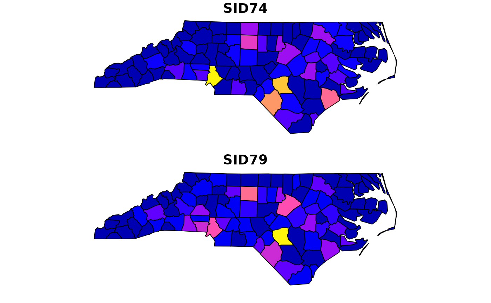
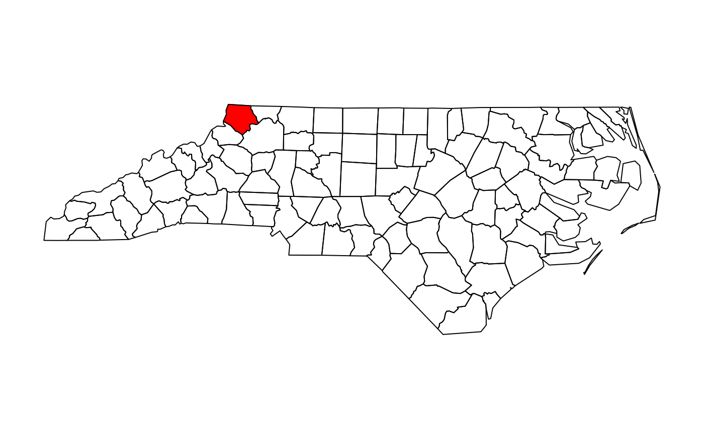
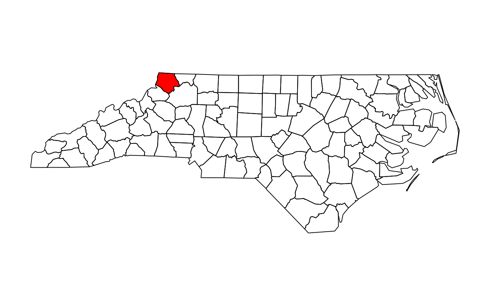
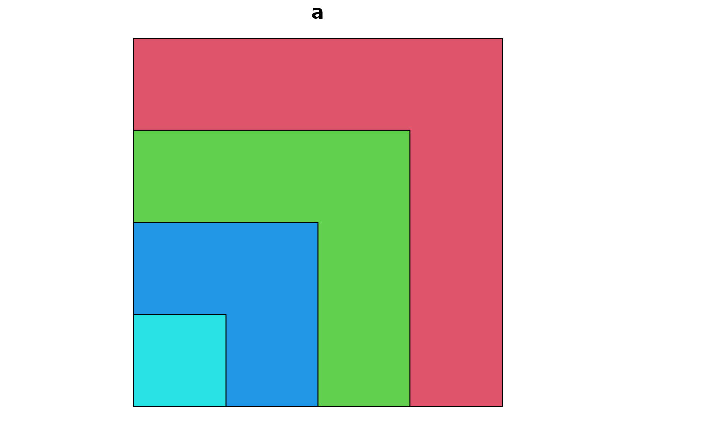
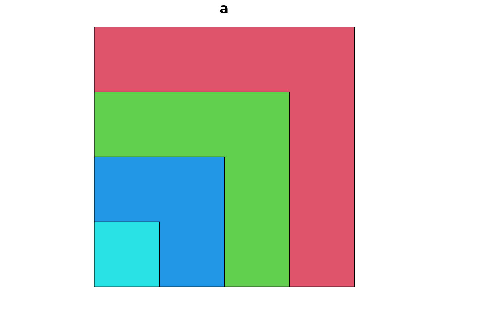

plot one or more attributes of an sf object on a map Plot sf object
Usage
# S3 method for class 'sf'
plot(
x,
y,
...,
main,
pal = NULL,
nbreaks = 10,
breaks = "pretty",
max.plot = getOption("sf_max.plot", default = 9),
key.pos = get_key_pos(x, ...),
key.length = 0.618,
key.width = kw_dflt(x, key.pos),
reset = TRUE,
logz = FALSE,
extent = x,
xlim = st_bbox(extent)[c(1, 3)],
ylim = st_bbox(extent)[c(2, 4)],
compact = FALSE
)
get_key_pos(x, ...)
# S3 method for class 'sfc_POINT'
plot(
x,
y,
...,
pch = 1,
cex = 1,
col = 1,
bg = 0,
lwd = 1,
lty = 1,
type = "p",
add = FALSE
)
# S3 method for class 'sfc_MULTIPOINT'
plot(
x,
y,
...,
pch = 1,
cex = 1,
col = 1,
bg = 0,
lwd = 1,
lty = 1,
type = "p",
add = FALSE
)
# S3 method for class 'sfc_LINESTRING'
plot(x, y, ..., lty = 1, lwd = 1, col = 1, pch = 1, type = "l", add = FALSE)
# S3 method for class 'sfc_CIRCULARSTRING'
plot(x, y, ...)
# S3 method for class 'sfc_MULTILINESTRING'
plot(x, y, ..., lty = 1, lwd = 1, col = 1, pch = 1, type = "l", add = FALSE)
# S3 method for class 'sfc_POLYGON'
plot(
x,
y,
...,
lty = 1,
lwd = 1,
col = NA,
cex = 1,
pch = NA,
border = 1,
add = FALSE,
rule = "evenodd",
xpd = par("xpd")
)
# S3 method for class 'sfc_MULTIPOLYGON'
plot(
x,
y,
...,
lty = 1,
lwd = 1,
col = NA,
border = 1,
add = FALSE,
rule = "evenodd",
xpd = par("xpd")
)
# S3 method for class 'sfc_GEOMETRYCOLLECTION'
plot(
x,
y,
...,
pch = 1,
cex = 1,
bg = 0,
lty = 1,
lwd = 1,
col = 1,
border = 1,
add = FALSE
)
# S3 method for class 'sfc_GEOMETRY'
plot(
x,
y,
...,
pch = 1,
cex = 1,
bg = 0,
lty = 1,
lwd = 1,
col = ifelse(st_dimension(x) == 2, NA, 1),
border = 1,
add = FALSE
)
# S3 method for class 'sfg'
plot(x, ...)
plot_sf(
x,
xlim = NULL,
ylim = NULL,
asp = NA,
axes = FALSE,
bgc = par("bg"),
...,
xaxs,
yaxs,
lab,
setParUsrBB = FALSE,
bgMap = NULL,
expandBB = c(0, 0, 0, 0),
graticule = NA_crs_,
col_graticule = "grey",
border,
extent = x
)
sf.colors(n = 10, cutoff.tails = c(0.35, 0.2), alpha = 1, categorical = FALSE)
# S3 method for class 'sf'
text(x, labels = row.names(x), ...)
# S3 method for class 'sfc'
text(x, labels = seq_along(x), ..., of_largest_polygon = FALSE)
# S3 method for class 'sf'
points(x, ...)
# S3 method for class 'sfc'
points(x, ..., of_largest_polygon = FALSE)Arguments
- x
object of class sf
- y
ignored
- ...
further specifications, see plot_sf and plot and details.
- main
title for plot (
NULLto remove)- pal
palette function, similar to rainbow, or palette values; if omitted,
sf.colorsis used- nbreaks
number of colors breaks (ignored for
factororcharactervariables)- breaks
either a numeric vector with the actual breaks, or a name of a method accepted by the
styleargument of classIntervals- max.plot
integer; lower boundary to maximum number of attributes to plot; the default value (9) can be overridden by setting the global option
sf_max.plot, e.g.options(sf_max.plot=2)- key.pos
numeric; side to plot a color key: 1 bottom, 2 left, 3 top, 4 right; set to
NULLto omit key completely, 0 to only not plot the key, or -1 to select automatically. If multiple columns are plotted in a single function call by default no key is plotted and every submap is stretched individually; if a key is requested (andcolis missing) all maps are colored according to a single key. Auto select depends on plot size, map aspect, and, if set, parameterasp. If it has lenght 2, the second value, ranging from 0 to 1, determines where the key is placed in the available space (default: 0.5, center).- key.length
amount of space reserved for the key along its axis, length of the scale bar
- key.width
amount of space reserved for the key (incl. labels), thickness/width of the scale bar
- reset
logical; if
FALSE, keep the plot in a mode that allows adding further map elements; ifTRUErestore original mode after plottingsfobjects with attributes; see details.- logz
logical; if
TRUE, use log10-scale for the attribute variable. In that case,breaksandatneed to be given as log10-values; see examples.- extent
object with an
st_bboxmethod to define plot extent; defaults tox- xlim
see plot.window
- ylim
see plot.window
- compact
logical; compact sub-plots over plotting space?
- pch
plotting symbol
- cex
symbol size
- col
color for plotting features; if
length(col)does not equal 1 ornrow(x), a warning is emitted that colors will be recycled. Specifyingcolsuppresses plotting the legend key.- bg
symbol background color
- lwd
line width
- lty
line type
- type
plot type: 'p' for points, 'l' for lines, 'b' for both
- add
logical; add to current plot? Note that when using
add=TRUE, you may have to setreset=FALSEin the first plot command.- border
color of polygon border(s); using
NAhides them- rule
see polypath; for
winding, exterior ring direction should be opposite that of the holes; withevenodd, plotting is robust against misspecified ring directions- xpd
see par; sets polygon clipping strategy; only implemented for POLYGON and MULTIPOLYGON
- asp
see below, and see par
- axes
logical; should axes be plotted? (default FALSE)
- bgc
background color
- xaxs
see par
- yaxs
see par
- lab
see par
- setParUsrBB
default FALSE; set the
par“usr” bounding box; see below- bgMap
object of class
ggmap, or returned by functionRgoogleMaps::GetMap- expandBB
numeric; fractional values to expand the bounding box with, in each direction (bottom, left, top, right)
- graticule
logical, or object of class
crs(e.g.,st_crs(4326)for a WGS84 graticule), or object created by st_graticule;TRUEwill give the WGS84 graticule or object returned by st_graticule- col_graticule
color to used for the graticule (if present)
- n
integer; number of colors
- cutoff.tails
numeric, in
[0,0.5]start and end values- alpha
numeric, in
[0,1], transparency- categorical
logical; do we want colors for a categorical variable? (see details)
- labels
character, text to draw (one per row of input)
- of_largest_polygon
logical, passed on to st_centroid
Details
plot.sf maximally plots max.plot maps with colors following from attribute columns,
one map per attribute. It uses sf.colors for default colors. For more control over placement of individual maps,
set parameter mfrow with par prior to plotting, and plot single maps one by one; note that this only works
in combination with setting parameters key.pos=NULL (no legend) and reset=FALSE.
plot.sfc plots the geometry, additional parameters can be passed on
to control color, lines or symbols.
When setting reset to FALSE, the original device parameters are lost, and the device must be reset using dev.off() in order to reset it.
parameter at can be set to specify where labels are placed along the key; see examples.
The features are plotted in the order as they apppear in the sf object. See examples for when a different plotting order is wanted.
plot_sf sets up the plotting area, axes, graticule, or webmap background; it
is called by all plot methods before anything is drawn.
The argument setParUsrBB may be used to pass the logical value TRUE to functions within plot.Spatial. When set to TRUE, par(“usr”) will be overwritten with c(xlim, ylim), which defaults to the bounding box of the spatial object. This is only needed in the particular context of graphic output to a specified device with given width and height, to be matched to the spatial object, when using par(“xaxs”) and par(“yaxs”) in addition to par(mar=c(0,0,0,0)).
The default aspect for map plots is 1; if however data are not
projected (coordinates are long/lat), the aspect is by default set to
1/cos(My * pi/180) with My the y coordinate of the middle of the map
(the mean of ylim, which defaults to the y range of bounding box). This
implies an Equirectangular projection.
non-categorical colors from sf.colors were taken from bpy.colors, with modified cutoff.tails defaults
If categorical is TRUE, default colors are from https://colorbrewer2.org/ (if n < 9, Set2, else Set3).
text.sf adds text to an existing base graphic. Text is placed at the centroid of
each feature in x. Provide POINT features for further control of placement.
points.sf adds point symbols to an existing base graphic. If points of text are not shown
correctly, try setting argument reset to FALSE in the plot() call.
Examples
nc = st_read(system.file("gpkg/nc.gpkg", package="sf"), quiet = TRUE)
# plot single attribute, auto-legend:
plot(nc["SID74"])
# plot multiple:
plot(nc[c("SID74", "SID79")]) # better use ggplot2::geom_sf to facet and get a single legend!

# adding to a plot of an sf object only works when using reset=FALSE in the first plot:
plot(nc["SID74"], reset = FALSE)
plot(st_centroid(st_geometry(nc)), add = TRUE)
 # log10 z-scale:
plot(nc["SID74"], logz = TRUE, breaks = c(0,.5,1,1.5,2), at = c(0,.5,1,1.5,2))
# log10 z-scale:
plot(nc["SID74"], logz = TRUE, breaks = c(0,.5,1,1.5,2), at = c(0,.5,1,1.5,2))
 # and we need to reset the plotting device after that, e.g. by
layout(1)
# when plotting only geometries, the reset=FALSE is not needed:
plot(st_geometry(nc))
plot(st_geometry(nc)[1], col = 'red', add = TRUE)

# add a custom legend to an arbitray plot:
layout(matrix(1:2, ncol = 2), widths = c(1, lcm(2)))
plot(1)
.image_scale(1:10, col = sf.colors(9), key.length = lcm(8), key.pos = 4, at = 1:10)
# and we need to reset the plotting device after that, e.g. by
layout(1)
# when plotting only geometries, the reset=FALSE is not needed:
plot(st_geometry(nc))
plot(st_geometry(nc)[1], col = 'red', add = TRUE)

# add a custom legend to an arbitray plot:
layout(matrix(1:2, ncol = 2), widths = c(1, lcm(2)))
plot(1)
.image_scale(1:10, col = sf.colors(9), key.length = lcm(8), key.pos = 4, at = 1:10)
 # manipulate plotting order, plot largest polygons first:
p = st_polygon(list(rbind(c(0,0), c(1,0), c(1,1), c(0,1), c(0,0))))
x = st_sf(a=1:4, st_sfc(p, p * 2, p * 3, p * 4)) # plot(x, col=2:5) only shows the largest polygon!
plot(x[order(st_area(x), decreasing = TRUE),], col = 2:5) # plot largest polygons first
sf.colors(10)
#> [1] "#0000B3FF" "#0400FFFF" "#4500FFFF" "#8500FFFF" "#C527D8FF" "#FF50AFFF"
#> [7] "#FF7A85FF" "#FFA35CFF" "#FFCC33FF" "#FFF50AFF"
text(nc, labels = substring(nc$NAME,1,1))

# manipulate plotting order, plot largest polygons first:
p = st_polygon(list(rbind(c(0,0), c(1,0), c(1,1), c(0,1), c(0,0))))
x = st_sf(a=1:4, st_sfc(p, p * 2, p * 3, p * 4)) # plot(x, col=2:5) only shows the largest polygon!
plot(x[order(st_area(x), decreasing = TRUE),], col = 2:5) # plot largest polygons first
sf.colors(10)
#> [1] "#0000B3FF" "#0400FFFF" "#4500FFFF" "#8500FFFF" "#C527D8FF" "#FF50AFFF"
#> [7] "#FF7A85FF" "#FFA35CFF" "#FFCC33FF" "#FFF50AFF"
text(nc, labels = substring(nc$NAME,1,1))
